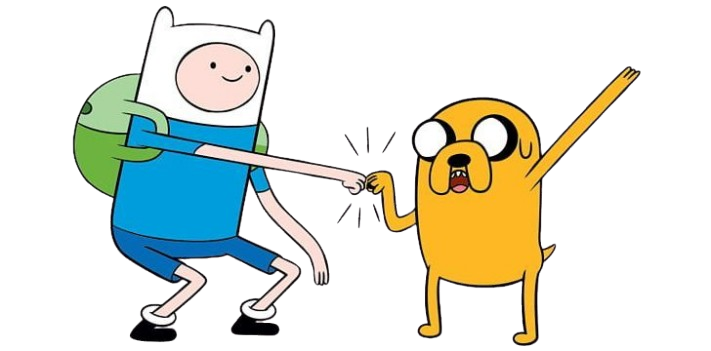

A série segue as aventuras de Finn, um garoto humano aventureiro, e o seu melhor amigo e irmão adotivo Jake, um cão com poderes que lhe permitem alterar a forma e tamanho conforme a sua vontade. Finn e Jake habitam a pós-apocalíptica Terra de Ooo, onde interagem com os outros personagens principais da série.
Finn Mertens - Se apenas nascer já é o maior ato da criação, o que vem depois disso? Tudo que vem depois não é meio que uma decepção? Se desgastando lentamente até virarmos uma pilha de gosma? [...] Do que vai adiantar se todo mundo vai explodir agora mesmo?
Não, ser maluco é difícil! Você tá se enrolando todo, se enrolando nos seus problemas imaginários. Você tem que prestar atenção no que é real, cara. Tá vendo essa caneca aqui? É literalmente minha caneca preferida no mundo. [joga a caneca pela janela] Agora já era pra sempre, então ela não é real, e eu não ligo mais pra ela.